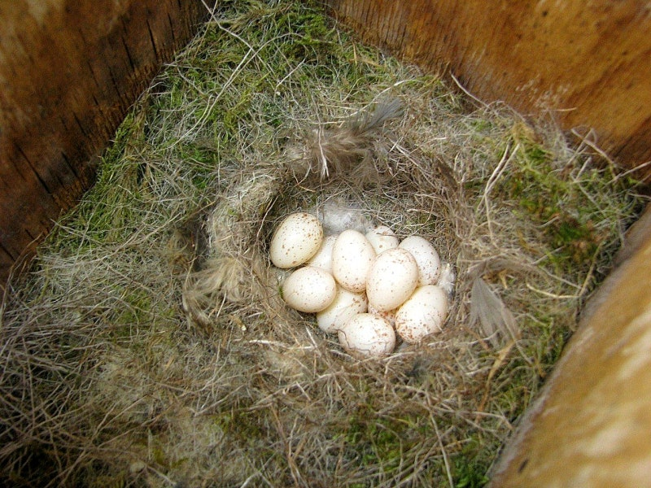
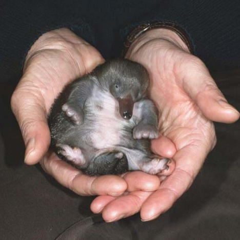
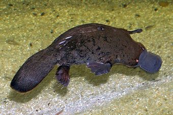

1

그림을 넣어주세요
1단계 알
엄마 오리너구리가 둥지 속에서 알을 낳아 품어요.

엄마 오리너구리가 둥지 속에서 알을 낳아 품어요.

알에서 깨어난 뒤, 엄마 배에서 나오는 젖을 먹고 자라요.

오리 같은 부리와 너구리 같은 꼬리를 가지고 물속을 헤엄쳐요.
아이들을 위한 팁
새(조류)처럼 알을 낳지만, 개나 고양이처럼 엄마 젖을 먹고 자라는 아주 신기한 동물이에요!